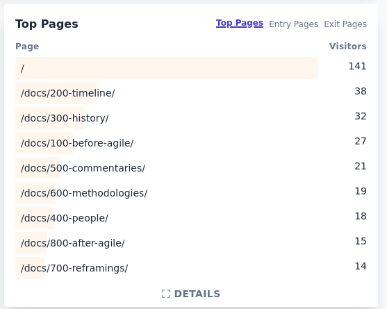

“Agile history, it matters, right?” at FroGS conf
On September 9th I facilitated a session at the FroGS conf open space titled “Agile history, it matters, right?” My main goal was to get input on where to take my Context of Agile site. Before asking for that input, however, I asked the participants three questions about the history of Agile. I figured it would provide a good introduction to the topic. And I was curious how much the kind of person that joins a session like this, knows about the history of Agile. So a big thank you to all the participants!
The three questions about the history of Agile
The three questions about the history of Agile were:
- When did Agile start?
- What lightweight methodologies were represented at the Manifesto meeting?
- What did the software development look like that Agile was reacting against?
In what follows, I’m not going to reproduce the full answers and ensuing conversations. (Even if I wanted to, I wouldn’t be able to just from memory and the Miro board.) Instead I’ll share a combination of summary and reflection.
When did Agile start?
The question “When did Agile start?” got a range of interesting answers. Luckily they didn’t contradict each other, but combined into a consistent picture. It made me realize that a better question is: “What were the watershed moments in Agile history?”
Those watershed moments would be:
- software development until waterfall
- the emergence of waterfall
- the authors of the Manifesto starting to develop lightweight methodologies
- the Agile Manifesto
A different kind of answer to the question of when Agile started, was “tomorrow”, as in: everyone wants to be Agile, but not just yet, not today.
What lightweight methodologies were represented at the Manifesto meeting?
To understand the Agile Manifesto I think there’s value in understanding the lightweight methodologies that were represented at the Manifesto meeting. None of us were able to give the full and complete list.
What we did have, combining our answers, was:
- 3x Extreme Programming (XP)
- 3x Scrum
- 2x Dynamic Systems Development Method (DSDM)
- 2x Rapid Application Development (RAD)
- 1x Adaptive Software Development
- 1x Crystal
- 1x Pragmatic Programming (PP)
One participant “looked up on agilemanifesto.org and was surprised.” Another participant asked ChatGPT, which mentioned several methodologies on the list, but also included Lean Software Development.
What’s the actual answer?
The “History: The Agile Manifesto” page on the Agile Manifesto site says:
Representatives from Extreme Programming, SCRUM, DSDM, Adaptive Software Development, Crystal, Feature-Driven Development, Pragmatic Programming,1 and others sympathetic to the need for an alternative to documentation driven, heavyweight software development processes convened.
Combining this information with the site’s Authors page and the Wikipedia page on Agile software development, I think this is the correct answer:
- Extreme Programming: Kent Beck, Ward Cunningham, Ron Jeffries
- SCRUM: Mike Beedle (also XBreed), Ken Schwaber, Jeff Sutherland
- DSDM: Arie van Bennekum
- Adaptive Software Development: Jim Highsmith
- Crystal: Alistair Cockburn
- Feature-Driven Development: Jon Kern(?)
- Pragmatic Programming: Dave Thomas, Andrew Hunt
- the others: Martin Fowler, James Grenning, Brian Marick, Robert C. Martin, Steve Mellor
What strikes me about this list, is that five of the Manifesto’s co-authors, so close to a third of them, did not (co-)create a methodology. So having an understanding of the methodologies that were represented, is not enough. The background of these five other co-authors is also relevant.
Can you give a brief explanation of each of these?
As a follow-up question I asked the participants (including myself) which of these methodologies they were comfortable explaining - even if only very briefly. Only Scrum got a convinced “yes!” from all participants. Most of us would also be able to say a thing or two about Extreme Programming. As to all the other methodologies, we didn’t have much of a clue.2
What did the software development look like that Agile was reacting against?
The main elements we came up with, were:
- The spec is the ultimate truth. If it doesn’t violate the spec, it’s not a bug. If it’s an improvement over the spec, it’s a bug.
- Spending two years writing documentation, but not a single line of code.
- Release every 12-18 months, if you’re lucky enough your project didn’t fail.
- Just get it right from the start.
- Silos instead of small iterations.
- Wrapping all of this up in a a methodology with 1000 process steps. It doesn’t work, but as a product it does sell.
While that is a great start and we were getting short on time, it also feels very limited to me. Even though I did work in quite a waterfall way the first six-ish years of my career, those memories feel far away and I have trouble imagining myself back in such an environment. And I suspect the same applies to the other participants.
It makes me wonder how people who have never experienced those waterfall days, interpret the Agile Manifesto. If you don’t realize that people used to write several layers of design documents (architecture, functional design, technical design) before writing a single line of code, how will you make sense of “Working software over comprehensive documentation”? Does it make all documentation suspect? If you’ve never been part of a Pert or Gantt chart spanning at least nine months, what do you make of “Responding to change over following a plan”? Is all planning a waste of time?
Where to take Context of Agile?
In the final five minutes of the session, I asked the participants what they think I should do with my Context of Agile site. Right now it’s a collection of resources about the history of Agile. Is that useful? Should it be something else? (If you read this and have an answer to any of these questions, I’d be very curious to hear them.)
To illustrate the (to me) lack of success of the site, I also shared the site’s statistics of the last 12 months:

What is the purpose of the site?
The main question I had in my head was: “What do you want this site to be?” but that was turned quite quickly in a question to me: “What is the purpose of the site? Is it a historical archive? Something else? How could this be of interest to academics?”
The most helpful comment was probably: “It’s for nerds like us.” Fair comment.
Writing history is defining history
Someone pointed out that writing history is defining history. More people were invited to the Agile Manifesto meeting than the ones that ended up joining. And some people who could have been invited, weren’t - if only because the organizers didn’t know of their existence.
So for a site like Context of Agile, there’s a real risk of instead of giving a proper view of history, it amplifies the narrative that the whole history of Agile is nothing more than the Agile Manifesto, Scrum, and a bit of XP.
Does the history matter?
For the site to matter, the history of Agile needs to matter. To be honest, I don’t understand how it could not matter. We should have better sources than the existing folklore. People should be less wrong about Agile’s history. We should look at the Agile Manifesto more as a historical event and less as something that came down from the heavens.
Until how recent is history?
One of the participants asked the excellent question: “Until how recent does history go?” Which led me to reply: “I’m ready for Agile to end.” Agile means too many different things to too many different people. It’s time to let it go. And perhaps - hopefully - a better understanding of the history of Agile can help us doing so.
-
This order is not alphabetically, so I wonder how it was chosen. ↩
-
Less than a year ago I did read Jim Highsmith’s “Agile Software Development Ecosystems”, which includes chapters on all of the represented methodologies except for Pragmatic Programming. (It also has a chapter on Lean Development.) I suppose that just shows the difference between reading a book and retaining what was in it. ↩